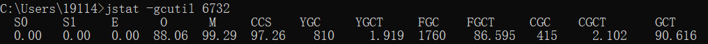
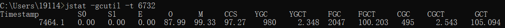

JVM监控工具
jps
jps：JVM Process Status Tool，用于列出正在运行的虚拟机进程，并显示虚拟机执行主类（Main Class，main()函数所在的类）名称以及这些进程的本地虚拟机唯一ID(LVMID，Local Virtual Machine Identifier)。对于本地虚拟机进程来说，LVMID与操作系统的进程ID(PID，Process Identifier)是一致的。
jps命令格式：
# hostid是可选参数，不输入时表示查询的是本机的虚拟机进程，输入时需要输入RMI注册表中的主机名
# hostid格式（与URI格式基本一致）：[protocol:][[//]hostname][:port][/servername]
jps [options] [hostid]
options选项格式：
| 选项 | 作用 |
|---|---|
| -q | 只输出LVMID，省略主类的名称 |
| -m | 输出虚拟机进程启动时传递给主main()函数的参数 |
| -l | 输出主类的全名，如果进程执行的是jar包，输出jar路径 |
| -v | 输出虚拟机进程启动时JVM参数 |
需要注意的是，如果某Java进程关闭了默认开启的UsePerfData参数（即使用参数-XX:-UsePerfData），那么jps命令（以及jstat）将无法探知该Java进程。
jstat
jstat：JVM Statistics Monitoring Tool，是用于监视虚拟机各种运行状态信息的命令行工具。它可以显示本地或者远程虚拟机进程中的类加载、内存、垃圾收集、即时编译等运行时数据，是运行期定位虚拟机性能问题的常用工具。
jstat命令格式：
# interval和count代表查询间隔和次数，如果省略这2个参数，说明只查询一次
# 仅设置interval参数而不设置count参数时，可以循环打印直至jdk停止
jstat [ option vmid [interval[s|ms] [count]] ]
VMID格式说明：如果是本地虚拟机进程，VMID与LVMID是一致的；如果是远程虚拟机进程，那VMID的格式如下
[protocol:][//]lvmid[@hostname[:port]/servername]
option表示希望查询的虚拟机信息，主要分为三类：类装载、垃圾回收、运行编译状况
| 选项 | 作用 |
|---|---|
| -class | 监视类装载、卸载数量、总空间以及类装载所耗费的时间 |
| -gc | 监视java堆状况，包括Eden区、两个Survivor区、老年代、永久代等的容量、已用空间、GC时间合计等信息 |
| -gccapacity | 监视内容与 -gc基本相同，但输出主要关注java堆各个区域使用到的最大、最小空间 |
| -gcutil | 监视内容与 -gc基本相同，但输出主要关注已使用空间站总空间的百分比 |
| -gccause | 与 -gcutil功能一样，但是会额外输出导致上一次GC产生的原因 |
| -gcnew | 监视新生代GC状况 |
| -gcnewcapacity | 监视内容与 -gcnew基本相同，输出主要关注使用到的最大、最小空间 |
| -gcold | 监视老年代GC状况 |
| -gcoldcapacity | 监视内容与 -gcold基本相同，输出主要关注使用到的最大、最小空间 |
| -compiler | 输出JIT编译器编译过的方法、耗时等信息 |
| -printcompilation | 输出已经被JIT编译的方法 |
jstat -gc输出内容说明：

2个Survivor区（S0、S1，表示Survivor0、Survivor1）、新生代Eden区（E，表示Eden）是空的，老年代(O，表示Old)和元空间（M，表示Metaspace，在jdk1.7之前为永久代P，表示Permanent）分别使用了88.06%和99.29%的空间。程序运行以来共发生Minor GC（YGC，表示Young GC）810次，总耗时1.919秒；发生Full GC（FGC，表示Full GC）1760次，总耗时（FGCT，表示Full GC Time）为96.595秒；所有GC总耗时（GCT，表示GC Time）为90.616。
CGC和CGCT，分别代表并发GC Stop-The-World的次数和时间。可以比较Java进程的启动时间以及总GC时间（GCT列），或者两次测量的间隔时间以及总GC时间的增量，来得出GC时间占运行时间的比例。如果该比例超过20%，则说明目前堆的压力较大；如果该比例超过90%，则说明堆里几乎没有可用空间，随时都可能抛出OOM异常。
jstat 支持使用-t将在每行数据之前打印目标Java进程的启动时间，示例如下：

jinfo
jinfo：Configuration Info for Java，实时查看虚拟机各项参数，包括传递给Java虚拟机的-X（即输出中的jvm_args）、-XX参数（即输出中的VM Flags），以及可在Java层面通过System.getProperty获取的-D参数（即输出中的System Properties）。
其他查看Java进程参数的方式：
# 查看参数默认值，jdk1.6及以上版本可用
java -XX:+PrintFlagsFinal
# 仅可查看虚拟机启动时显式指定的参数列表
jps -v
jinfo还可以用来修改目标Java进程的“manageable”虚拟机参数：
# 查看jvm manageable参数列表
java -XX:+PrintFlagsFinal -version | grep manageable
jinfo命令格式：
jinfo [ option ] pid
jinfo使用示例：
# -flag name：显示指定名称对应的配置参数
jinfo -flag PrintGC PID
# -flag [+|-]name：启用或禁用指定名称的参数，该参数必须为Boolean类型
# 开启简单GC日志模式
jinfo -flag +PrintGC PID
# 禁用简单GC模式
jinfo -flag -PrintGC PID
# -flag name=value：不需要重启Java虚拟机，修改指定名称的参数为指定的值
# 修改空闲堆空间的最小百分比（MinHeapFreeRatio）为30%
info -flag MinHeapFreeRatio=30 PID
# -flags：显示全部的配置参数
jinfo -flags PID
# -sysprops：以键值对的方式显示当前Java虚拟机的全部的系统属性
jinfo -sysprops PID